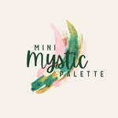
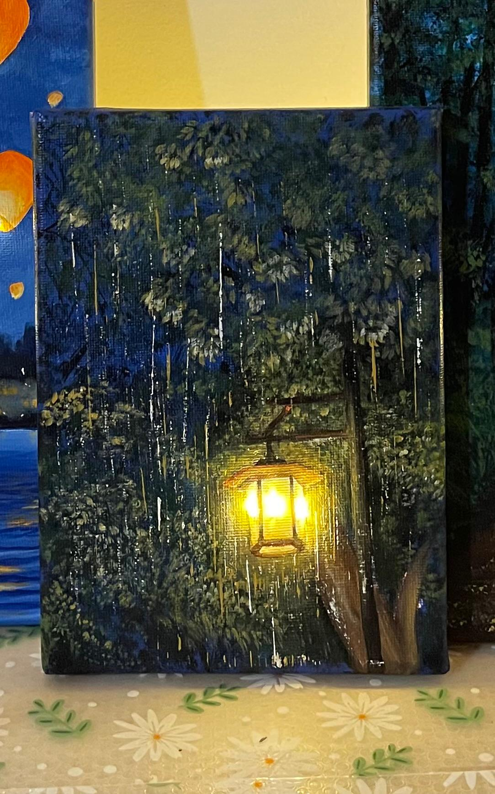

The Last Ride
Night & Light

Welcome to Mini Mystic Palette — paintings inspired by nature, night skies, glowing lights, quiet moments and curious little worlds.

FEATUREDFrom glowing forests and rainy roads to stars in the sky, each piece is a tiny escape into another mood.
Mini Mystic Palette is a space for turning feelings, memories and tiny observations into colour. From quiet night scenes to glowing forests, the art is less about fitting into one style and more about following curiosity.
I’m a software engineer by day, but somewhere between deadlines, screens and busy days, I found a little piece of myself in painting. Art started as something I did simply because it made me happy. There was something comforting about sitting down with a blank canvas, choosing colours, and slowly watching an idea come to life. I didn’t always know what the final painting would look like—and honestly, I still don’t. But that’s what I love about creating..
Say hello ↗Perfect for sharing sketches, painting progress and behind-the-scenes videos.
An image, memory or feeling becomes the first tiny idea.
Colours, lights, textures and details slowly build the scene.
The painting finds its mood — and a little world begins to exist.
Replace these details with the artist's actual email and social handles.